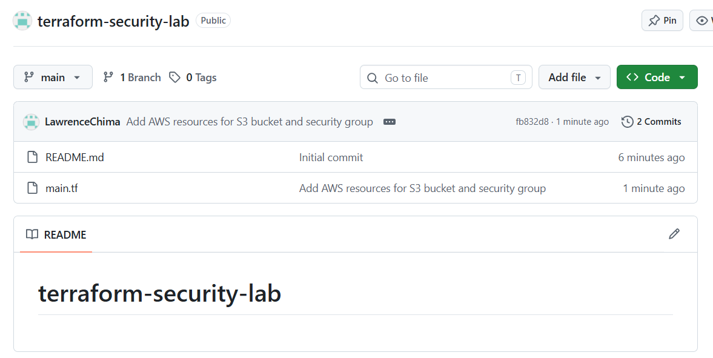
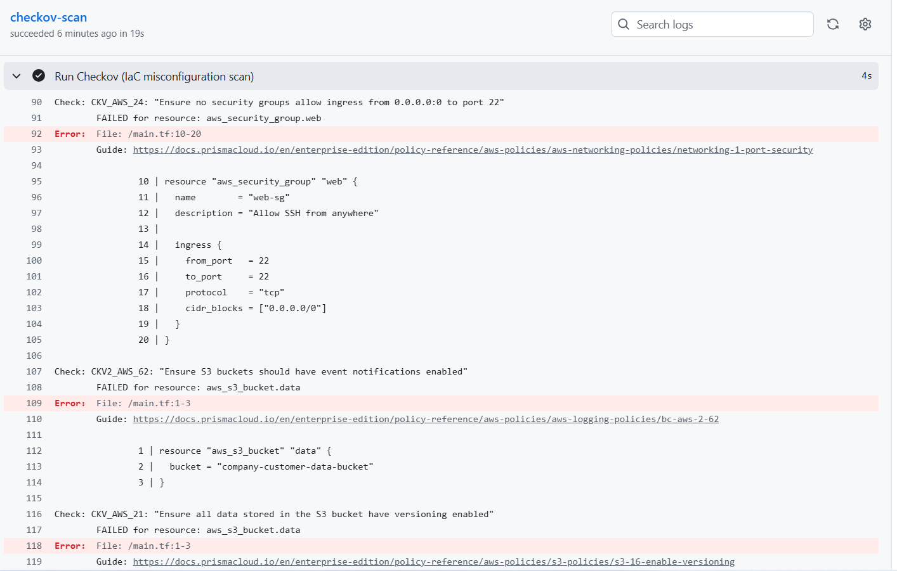
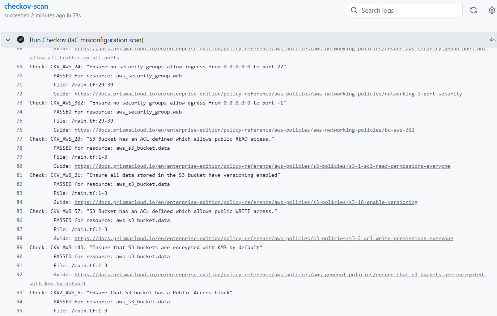

Summary
Case 005 was about catching problems in application code. This one moves a step earlier — into the infrastructure itself, before anything is deployed. Most real cloud breaches don't come from a clever exploit; they come from a plain misconfiguration (a storage bucket left public, a security group open to the entire internet) that got written into the infrastructure definition and never caught. This project writes exactly that kind of mistake into a small Terraform configuration on purpose, scans it automatically, and then triages and fixes what the scanner finds — the way a cloud security engineer would review a pull request before it's allowed to merge.
Environment and stack
- Infrastructure-as-Code: Terraform (AWS provider) — written and scanned, never actually deployed, so no AWS account or cost was needed
- Scanner: Checkov (Bridgecrew / Palo Alto), covering AWS's own published misconfiguration policies
- Automation: GitHub Actions, scanning automatically on every push
Phase 1: Writing a realistic, deliberately flawed configuration
I wrote a small Terraform file defining two resources with mistakes that are common in real environments: an S3 bucket with a public-read ACL, and a security group allowing inbound SSH (port 22) from 0.0.0.0/0 — the entire internet, not a specific network.

Phase 2: Automated scanning on every push
I wired Checkov into a GitHub Actions workflow so it runs automatically against the Terraform files on every push, the same shift-left pattern as Case 005's application pipeline, applied here to infrastructure instead of code.
The first scan returned far more than the two issues I'd deliberately planted — 10 failed checks across both resources. A minimal, unconfigured resource fails every "did you explicitly turn this on" check by default: missing encryption, missing versioning, missing access logging, missing a public access block, and more, on top of the public ACL and open SSH rule.

Phase 3: Triage, fix, and re-scan
Not every failed check carries equal weight, and treating all 10 as equally urgent would have missed the point of the exercise. I triaged them the way a real review would: fixed the issues with direct, serious security impact, and explicitly accepted the lower-priority ones for this lab context rather than configuring every setting Checkov could possibly check for.
Fixed:
- Removed the public-read ACL and added an explicit
aws_s3_bucket_public_access_blockresource, blocking public access at the account/bucket level rather than relying on the ACL alone - Enabled versioning on the S3 bucket, so accidental deletion or overwrite is recoverable
- Enabled default server-side encryption (KMS) on the bucket
- Restricted the security group's SSH rule from
0.0.0.0/0to a specific network range, rather than the entire internet
Accepted as lower priority for this lab: access logging, cross-region replication, lifecycle rules, and event notifications — these matter in a production environment with real data and compliance requirements, but don't carry the same risk as a publicly writable bucket or an internet-facing SSH port on a resource with no real data behind it.

Lessons learned
The volume of findings on a nearly-empty Terraform file was the most useful part of this project to internalize: cloud resources are insecure by default until explicitly configured otherwise, and a scanner doing its job will reflect that honestly rather than only flagging the "obvious" mistakes. Getting from 10 failed checks to a clean, deliberately-triaged result is a more realistic picture of real cloud security work than fixing a single planted bug — most of the job is deciding what's actually worth fixing now versus what's an acceptable risk for the context, and being able to say why.